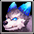
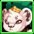
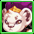
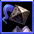
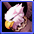
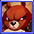
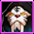
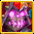
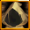

クリーチャーパッシブ一覧 2023


| アイコン | ランク | クリーチャー名 | メイン | Lv | サブ１ | Lv | サブ２ | Lv |
|---|---|---|---|---|---|---|---|---|
 |
N | ブリザード火炎犬 | 攻撃力 | 8 | 経験値 | 4 | 体力吸収 | 4 |
 |
N | 青の火炎犬 | ドロップ率 | 8 | 回避率 | 4 | ドロップ率 | 4 |
 |
N | 緑の火炎犬 | 火低下 | 8 | 被ダメージ反射 | 4 | 火強化 | 4 |
 |
N | 紫の火炎犬 | 火抵抗力 | 8 | 火強化 | 4 | 抵抗力低下防止 | 4 |
 |
N | 灰色の火炎犬 | 最大CP | 8 | 能力値低下防止 | 4 | 最大体力 | 4 |
 |
N | 赤の火炎犬 | 攻撃力 | 8 | 攻撃力 | 4 | 動物型ダメージ | 4 |
 |
N | 紫の閃光犬 | クリティカル確率 | 8 | クリティカルダメージ | 4 | スキル | 4 |
 |
N | 水色の閃光犬 | 最大体力 | 8 | 防御力 | 4 | 体力吸収 | 4 |
 |
N | 赤の閃光犬 | 火強化 | 8 | 神獣型ダメージ | 4 | 火低下 | 4 |
|  | N | 青の閃光犬 | 大地抵抗力 | 8 | クリティカルダメージ減少 | 4 | 火抵抗力 | 4 |
 |
N | 変異火炎犬 | ペット&召喚獣強化 | 8 | ペット&召喚獣体力 | 4 | ペット&召喚獣全てのステータス | 4 |
| N | 乙女ミニゴースト | 状態異常抵抗力 | 8 | ドロップ率 | 4 | 最大CP | 4 | |
 |
N | 海ミニゴースト | 闇低下 | 8 | 全ての属性抵抗 | 4 | 闇強化 | 4 |
 |
N | 森ミニゴースト | 闇抵抗力 | 8 | 闇強化 | 4 | 闇低下 | 4 |
 |
N | 崖ミニゴースト | 攻撃力 | 8 | 被魔法ダメージ吸収 | 4 | 命中率 | 4 |
 |
N | 岩ミニゴースト | スキル | 8 | スキル | 4 | 最大CP | 4 |
 |
N | 砂漠ミニゴースト | 回避率 | 8 | 火抵抗力 | 4 | 移動速度 | 4 |
| N | 滝ミニゴースト | 闇強化 | 8 | 攻撃速度 | 4 | 闇低下 | 4 | |
 |
N | 平原ミニゴースト | 最大体力 | 8 | クリティカルダメージ減少 | 4 | 悪魔型ダメージ | 4 |
 |
N | 紳士ミニゴースト | 移動速度 | 8 | 被魔法ダメージ吸収 | 4 | 攻撃力 | 4 |
 |
N | 墓地ミニゴースト | クリティカル確率 | 8 | 水抵抗力 | 4 | クリティカルダメージ | 4 |
 |
N | 地下ミニゴースト | 防御力 | 8 | 闇抵抗力 | 4 | 被ダメージ反射 | 4 |
 |
N | 強欲のゴーレム | 光抵抗力 | 8 | クリティカル確率 | 4 | 光低下 | 4 |
 |
N | 忘却のゴーレム | 光強化 | 8 | 光強化 | 4 | 動物型ダメージ | 4 |
 |
N | 貪欲のゴーレム | 回避率 | 8 | 能力値低下防止 | 4 | 光抵抗力 | 4 |
| N | 祝福のゴーレム | 攻撃速度 | 8 | クリティカルダメージ | 4 | 防御力 | 4 | |
 |
N | 勇気のゴーレム | 最大体力 | 8 | 最大体力 | 4 | ドロップ率 | 4 |
 |
N | 正義のゴーレム | 経験値 | 8 | 大地抵抗力 | 4 | 被ダメージ反射 | 4 |
| N | 不屈のゴーレム | 大地抵抗力 | 8 | 攻撃力 | 4 | 経験値 | 4 | |
 |
N | 幸福のゴーレム | ペット&召喚獣強化 | 8 | ペット&召喚獣全てのステータス | 4 | ペット&召喚獣攻撃力 | 4 |
 |
N | 希望のゴーレム | 移動速度 | 8 | アンデッド型ダメージ | 4 | 体力吸収 | 4 |
 |
N | 憤怒のゴーレム | 光低下 | 8 | 移動速度 | 4 | 光強化 | 4 |
 |
N | 復讐のゴーレム | ドロップ率 | 8 | 光抵抗力 | 4 | 状態異常抵抗力 | 4 |
 |
N | レビット | 水強化 | 8 | 水低下 | 4 | アンデッド型ダメージ | 4 |
 |
N | リビット | 水低下 | 8 | 抵抗力低下防止 | 4 | 水強化 | 4 |
 |
N | ルビット | 水抵抗力 | 8 | 回避率 | 4 | 被魔法ダメージ吸収 | 4 |
 |
N | ロビット | 最大体力 | 8 | 防御力 | 4 | 状態異常抵抗力 | 4 |
| N | ブビット | 最大CP | 8 | ペット&召喚獣強化 | 4 | 水抵抗力 | 4 | |
 |
N | レイット | 水強化 | 8 | 水低下 | 4 | スキルクールタイム減少 | 4 |
 |
N | ルイット | ペット&召喚獣全てのステータス | 8 | ペット&召喚獣体力 | 4 | 風抵抗力 | 4 |
| N | ロイット | 防御力 | 8 | 攻撃速度 | 4 | 神獣型ダメージ | 4 | |
 |
N | ライット | スキル | 8 | 攻撃力 | 4 | 防御力 | 4 |
 |
N | レビント | 水低下 | 8 | 水強化 | 4 | 被ダメージCPに変換 | 4 |
 |
N | ルビント | 命中率 | 8 | クリティカル確率 | 4 | 闇抵抗力 | 4 |
| N | 花霊アサガオ | 大地強化 | 8 | 被ダメージCPに変換 | 4 | 最大CP | 4 | |
 |
N | 花霊ローズ | 攻撃力 | 8 | 状態異常抵抗力 | 4 | クリティカルダメージ | 4 |
 |
N | 花霊スミレ | 状態異常抵抗力 | 8 | 最大体力 | 4 | 悪魔型ダメージ | 4 |
 |
N | 花霊ベル | 大地低下 | 8 | 大地強化 | 4 | 大地抵抗力 | 4 |
 |
N | 花霊ナノハ | 風抵抗力 | 8 | 命中率 | 4 | 全ての属性抵抗 | 4 |
 |
N | 花霊カスミ | 被ダメージ反射 | 8 | ペット&召喚獣全てのステータス | 4 | ペット&召喚獣状態異常抵抗 | 4 |
 |
N | 花霊ノウゼン | 風強化 | 8 | 最大CP | 4 | 風低下 | 4 |
 |
N | 花霊ワスレナ | 攻撃速度 | 8 | 最大体力 | 4 | 大地低下 | 4 |
 |
N | 花霊アマドコロ | 風低下 | 8 | 風抵抗力 | 4 | 風強化 | 4 |
| N | 花霊ウィロウ | 経験値 | 8 | 攻撃力 | 4 | 火抵抗力 | 4 | |
 |
N | 花霊アイリス | 被魔法ダメージ吸収 | 8 | 風強化 | 4 | 移動速度 | 4 |
 |
R | 黄昏のフレア | 火低下 | 16 | 回避率 | 8 | 火強化 | 8 |
| R | 堕落のフレア | 水低下 | 16 | 水強化 | 8 | 最大CP | 8 | |
 |
R | 呪いのフレア | 風低下 | 16 | 全ての属性抵抗 | 8 | 風強化 | 8 |
 |
R | 暗闇のフレア | 水強化 | 16 | 水抵抗力 | 8 | 水低下 | 8 |
 |
R | 地獄のフレア | 状態異常抵抗力 | 16 | 攻撃速度 | 8 | 悪魔型ダメージ | 8 |
 |
R | ボーンナイト | 闇抵抗力 | 16 | 最大体力 | 8 | 防御力 | 8 |
 |
R | ボーンウォリアー | 大地強化 | 16 | 防御力 | 8 | 大地強化 | 8 |
 |
R | ボーンヒーロー | 闇低下 | 16 | 闇強化 | 8 | 経験値 | 8 |
 |
R | ボーンソルジャー | 防御力 | 16 | 攻撃力 | 8 | 被ダメージ反射 | 8 |
 |
R | ボーンシーフ | 闇強化 | 16 | スキルクールタイム減少 | 8 | 闇低下 | 8 |
 |
R | 空色のルジュエ | 被ダメージ反射 | 16 | 最大体力 | 8 | ドロップ率 | 8 |
| R | 血色のルジュエ | 火強化 | 16 | 火低下 | 8 | スキル | 8 | |
 |
R | リボンのルジュエ | 移動速度 | 16 | クリティカルダメージ | 8 | 命中率 | 8 |
 |
R | 太糸のルジュエ | 回避率 | 16 | 移動速度 | 8 | 神獣型ダメージ | 8 |
| R | ルジュエ | 最大CP | 16 | ドロップ率 | 8 | 攻撃速度 | 8 | |
 |
R | ヴィド | 大地抵抗力 | 16 | 被ダメージCPに変換 | 8 | 攻撃力 | 8 |
| R | モヒカンキャロ | ドロップ率 | 16 | 経験値 | 8 | クリティカルダメージ減少 | 8 | |
 |
R | リーゼントキャロ | クリティカルダメージ | 16 | クリティカル確率 | 8 | 動物型ダメージ | 8 |
 |
R | アフロキャロ | 風強化 | 16 | 風低下 | 8 | 状態異常抵抗力 | 8 |
 |
R | ファフ | 全ての属性抵抗 | 16 | 光強化 | 8 | 能力値低下防止 | 8 |
 |
R | ポフ | 光低下 | 16 | アンデッド型ダメージ | 8 | 光強化 | 8 |
| R | パフ | 火強化 | 16 | 火低下 | 8 | 火抵抗力 | 8 | |
 |
R | プフ | 大地低下 | 16 | 大地抵抗力 | 8 | 大地強化 | 8 |
 |
R | レッドアブソル | クリティカル確率 | 16 | クリティカルダメージ | 8 | 全ての属性抵抗 | 8 |
 |
R | ブルーアブソル | 攻撃力 | 16 | 体力吸収 | 8 | 水抵抗力 | 8 |
 |
R | グリーンアブソル | 大地強化 | 16 | 大地抵抗力 | 8 | 大地低下 | 8 |
 |
R | パープルアブソル | 防御力 | 16 | 被魔法ダメージ吸収 | 8 | 被ダメージ反射 | 8 |
 |
R | ロードアブソル | クリティカル確率 | 16 | スキル | 8 | 火抵抗力 | 8 |
 |
R | 強靭なヒヨコ戦士 | 攻撃速度 | 16 | 体力吸収 | 8 | 風抵抗力 | 8 |
 |
R | 強運のヒヨコ戦士 | クリティカル確率 | 16 | 最大CP | 8 | 攻撃速度 | 8 |
 |
R | 賢明なヒヨコ戦士 | 光強化 | 16 | 光低下 | 8 | アンデッド型ダメージ | 8 |
 |
R | 疾風のヒヨコ戦士 | 大地強化 | 16 | 最大体力 | 8 | 大地低下 | 8 |
| R | 壮健なヒヨコ戦士 | クリティカルダメージ減少 | 16 | クリティカル確率 | 8 | 光抵抗力 | 8 | |
 |
R | ワイアットピグ | 最大体力 | 16 | 風抵抗力 | 8 | 全ての属性抵抗 | 8 |
 |
R | コリントピグ | 火強化 | 16 | 火低下 | 8 | スキル | 8 |
 |
R | フィルバートピグ | 風強化 | 16 | 風低下 | 8 | クリティカルダメージ減少 | 8 |
 |
R | メイソンピグ | ペット&召喚獣体力 | 16 | ペット&召喚獣状態異常抵抗 | 8 | ペット&召喚獣強化 | 8 |
 |
R | 骸骨仮面バット | 被ダメージCPに変換 | 16 | 防御力 | 8 | 抵抗力低下防止 | 8 |
 |
R | ピエロ仮面バット | 命中率 | 16 | 闇強化 | 8 | 闇低下 | 8 |
 |
R | 舞台仮面バット | 状態異常抵抗力 | 16 | 攻撃力 | 8 | クリティカルダメージ | 8 |
 |
R | トガリ仮面バット | ペット&召喚獣攻撃力 | 16 | ペット&召喚獣攻撃力 | 8 | ペット&召喚獣全てのステータス | 8 |
 |
R | ピンクチビット | スキル | 16 | 火強化 | 8 | クリティカル確率 | 8 |
 |
R | ブルーチビット | 最大体力 | 16 | 状態異常抵抗力 | 8 | 経験値 | 8 |
 |
R | グリーンチビット | ペット&召喚獣状態異常抵抗 | 16 | ペット&召喚獣強化 | 8 | ペット&召喚獣体力 | 8 |
| R | オレンジチビット | クリティカルダメージ | 16 | 防御力 | 8 | 命中率 | 8 | |
 |
R | 花精マリアカラス | 攻撃力 | 16 | 体力吸収 | 8 | 状態異常抵抗力 | 8 |
 |
R | 花精シャルル | ペット&召喚獣強化 | 16 | ペット&召喚獣全てのステータス | 8 | 攻撃速度 | 8 |
 |
R | 花精サンブライト | 経験値 | 16 | 移動速度 | 8 | 水低下 | 8 |
 |
R | 花精ブルームーン | スキル | 16 | 神獣型ダメージ | 8 | 体力吸収 | 8 |
| R | ブラウンモス | 火抵抗力 | 16 | 攻撃力 | 8 | 被魔法ダメージ吸収 | 8 | |
 |
R | バイオレットモス | 水抵抗力 | 16 | 水強化 | 8 | 能力値低下防止 | 8 |
 |
R | オリーブモス | 風抵抗力 | 16 | 最大体力 | 8 | 抵抗力低下防止 | 8 |
 |
R | ミュータントモス | 大地抵抗力 | 16 | 悪魔型ダメージ | 8 | 闇抵抗力 | 8 |
| R | パープルエリーズ | クリティカル確率 | 16 | 経験値 | 8 | 水抵抗力 | 8 | |
| R | ブルーエリーズ | 光抵抗力 | 16 | 攻撃力 | 8 | 神獣型ダメージ | 8 | |
 |
R | レッドエリーズ | ペット&召喚獣攻撃力 | 16 | ペット&召喚獣状態異常抵抗 | 8 | ペット&召喚獣体力 | 8 |
 |
R | グリーンエリーズ | 移動速度 | 16 | 被ダメージ反射 | 8 | 火抵抗力 | 8 |
 |
R | チャンピオンマモ | 攻撃力 | 16 | アンデッド型ダメージ | 8 | 光強化 | 8 |
 |
R | チャンピオンシマ | ペット&召喚獣全てのステータス | 16 | ペット&召喚獣攻撃力 | 8 | ペット&召喚獣体力 | 8 |
 |
R | チャンピオンモモ | 最大体力 | 16 | 闇抵抗力 | 8 | 体力吸収 | 8 |
 |
R | チャンピオンジリ | 最大CP | 16 | クリティカル確率 | 8 | ドロップ率 | 8 |
|  | R | プリンスリオン | スキル | 16 | ドロップ率 | 8 | 回避率 | 8 |
|  | R | プリンスラオン | 被魔法ダメージ吸収 | 16 | 悪魔型ダメージ | 8 | 命中率 | 8 |
 |
R | プリンスロウン | 攻撃速度 | 16 | クリティカルダメージ | 8 | 光抵抗力 | 8 |
 |
R | プリンスルウン | スキル | 16 | 動物型ダメージ | 8 | 経験値 | 8 |
 |
R | アスター | 被魔法ダメージ吸収 | 16 | 大地低下 | 8 | 攻撃力 | 8 |
| R | エスター | 防御力 | 16 | 風強化 | 8 | 被ダメージCPに変換 | 8 | |
 |
R | ウスター | 光強化 | 16 | 動物型ダメージ | 8 | 移動速度 | 8 |
| R | イスター | ペット&召喚獣の全てのステータス | 16 | 回避率 | 8 | クリティカルダメージ減少 | 8 | |
 |
R | オローニ | 火抵抗力 | 16 | 火低下 | 8 | ペット&召喚獣の攻撃力 | 8 |
 |
R | オローナ | 水抵抗力 | 16 | 水低下 | 8 | ペット&召喚獣強化 | 8 |
| R | オローネ | 風抵抗力 | 16 | 風低下 | 8 | ペット&召喚獣の状態異常抵抗 | 8 | |
 |
R | オローヌ | 大地抵抗力 | 16 | 大地低下 | 8 | ペット&召喚獣体力 | 8 |
 |
R | ソードガーディアン | 防御力 | 16 | 神獣型ダメージ | 8 | 被ダメージ反射 | 8 |
 |
R | アックスガーディアン | 最大体力 | 16 | 動物型ダメージ | 8 | 最大CP | 8 |
 |
R | ハンマーガーディアン | クリティカルダメージ減少 | 16 | アンデット型ダメージ | 8 | 獲得CP増加 | 8 |
 |
R | スピアガーディアン | 状態異常抵抗力 | 16 | 悪魔型ダメージ | 8 | 被ダメージCPに変換 | 8 |
 |
R | アウルナイト | 被ダメージ反射 | 16 | 最大体力 | 8 | 命中率 | 8 |
 |
R | アウルスカウト | クリティカル確率 | 16 | 回避率 | 8 | 攻撃速度 | 8 |
 |
R | アウルスコラ | 経験値 | 16 | スキル | 8 | 回避率 | 8 |
 |
R | アウルバンディット | ドロップ率 | 16 | 移動速度 | 8 | 体力吸収 | 8 |
| HR | コボルト大魔導師 | 火低下 | 24 | 火強化 | 12 | 魔法攻撃力強化 | 3 | |
 |
HR | ウィッチマゴ | 光低下 | 24 | 光強化 | 12 | 魔法強打 | 3 |
 |
HR | ドレアス | 水低下 | 24 | 水強化 | 12 | 水抵抗力 | 12 |
|  | HR | ナイトスピア | アンデッド型ダメージ | 24 | 上級状態異常抵抗力 | 3 | 闇抵抗力 | 12 |
 |
HR | ドベルト | 動物型ダメージ | 24 | クリティカル確率 | 12 | PVP防御力 | 3 |
| HR | タイムシュラット | スキルクールタイム減少 | 24 | 被ダメージ反射 | 12 | 風抵抗力 | 12 | |
 |
HR | エマティース | 大地低下 | 24 | 大地強化 | 12 | 最大CP | 12 |
 |
HR | トゥルイク | 悪魔型ダメージ | 24 | PVP防御力 | 3 | 上級攻撃力 | 3 |
|  | HR | グリフォン | 風低下 | 24 | 風強化 | 12 | 上級最大CP | 3 |
 |
HR | マスクグール | 闇低下 | 24 | 闇強化 | 12 | 与魔法ダメージ吸収 | 3 |
 |
HR | 泣き虫ルドルフ | ドロップ率 | 24 | PVP攻撃力 | 3 | 命中率 | 12 |
 |
HR | クリスマスフェアリー | ペット&召喚獣体力 | 24 | 経験値 | 12 | ペット&召喚獣強化 | 12 |
 |
HR | フォクシーテール | 経験値 | 24 | 人間型魔法ダメージ | 3 | 魔法攻撃力強化 | 3 |
| HR | ハウンデブル | 被ダメージ反射 | 24 | 被ダメージCPに変換 | 12 | 火抵抗力 | 12 | |
 |
HR | ペンギン大佐 | 回避率 | 24 | 上級防御力 | 3 | 風抵抗力 | 12 |
| HR | プリンセスルーナ | 被魔法ダメージ吸収 | 24 | 人間型ダメージ | 3 | 抵抗力低下防止 | 12 | |
|  | HR | クマーン | 防御力 | 24 | 強打 | 3 | 全ての属性抵抗 | 12 |
 |
HR | 見習い魔女リトル | クリティカルダメージ減少 | 24 | 上級体力 | 3 | 能力値低下防止 | 12 |
 |
HR | ライカンスロープ | 神獣型ダメージ | 24 | 敵致命打減少 | 3 | 被ダメージ反射 | 12 |
 |
HR | キングクレバネット | 経験値 | 24 | 体力吸収 | 12 | 上級攻撃速度 | 3 |
 |
HR | ガイア | 闇低下 | 24 | 魔法強打 | 3 | 光抵抗力 | 12 |
 |
HR | トリックスター | 状態異常抵抗力 | 24 | 防御力 | 12 | 人間型ダメージ抵抗 | 3 |
 |
HR | ドリーマー | 命中率 | 24 | 上級攻撃力 | 3 | 攻撃速度 | 12 |
 |
HR | ノーマド | 回避率 | 24 | 大地抵抗力 | 12 | 魔法抵抗力低下 | 3 |
 |
HR | シッティングダイル | 攻撃速度 | 24 | クリティカルダメージ | 12 | 回避率 | 12 |
 |
HR | メラニー | ペット&召喚獣強化 | 24 | ペット&召喚獣全てのステータス | 12 | 最大CP | 12 |
 |
HR | シーウォーカー | 最大体力 | 24 | ダブルクリティカルダメージ | 3 | 最大体力 | 12 |
 |
HR | カイザー | スキル | 24 | 上級状態異常抵抗力 | 3 | 魔法致命打 | 3 |
 |
HR | クレア | 攻撃力 | 24 | クリティカルダメージ減少 | 12 | ドロップ率 | 12 |
| HR | サキュバスヴェラ | スキル | 24 | 経験値 | 12 | 上級スキル | 3 | |
 |
HR | ヴィーナス | ペット&召喚獣攻撃力 | 24 | 最大体力 | 12 | 人間型ダメージ | 3 |
 |
HR | イフリート | 火強化 | 24 | 火抵抗力 | 12 | 被ダメージCPに変換 | 12 |
 |
HR | かんがえるさかな | 経験値 | 24 | 水抵抗力 | 12 | 体力吸収 | 12 |
 |
HR | ブラックウィドー | 能力値低下防止 | 24 | 魔法攻撃力強化 | 3 | ペット&召喚獣の魔法致命打確率 | 12 |
| HR | ホワイトレディー | 抵抗力低下防止 | 24 | 上級攻撃力 | 3 | ペット&召喚獣の強打確率 | 12 | |
 |
HR | プチデリン | 攻撃力 | 24 | 火抵抗力 | 12 | 命中率 | 12 |
| HR | プチダリン | ドロップ率 | 24 | 魔法攻撃力強化 | 3 | ペット&召喚獣全てのステータス | 12 | |
 |
HR | エルダーハーミット | 全ての属性抵抗 | 24 | 動物型ダメージ | 12 | ペット&召喚獣体力 | 12 |
 |
HR | タイニーフォックス | クリティカル確率 | 24 | 攻撃力 | 12 | 悪魔型ダメージ | 12 |
| HR | リトルロトル | 水強化 | 24 | 水低下 | 12 | 状態異常抵抗力 | 12 | |
 |
HR | ホエーリ | 抵抗力低下防止 | 24 | 移動速度 | 12 | 上級最大CP | 3 |
 |
SR | インキュバス | 上級スキル | 10 | 魔法抵抗力低下 | 5 | 闇強化 | 16 |
 |
SR | 吸血姫 | 体力吸収 | 32 | スキル | 16 | 上級攻撃力 | 5 |
 |
SR | アイスクイーン | ペット&召喚獣強化 | 32 | PVP防御力 | 5 | 人間型魔法ダメージ | 5 |
 |
SR | ラストウィッチ | 魔法致命打 | 10 | 与魔法ダメージ吸収 | 5 | 火強化 | 16 |
 |
SR | ラミア | クリティカルダメージ | 32 | PVP攻撃力 | 5 | 回避率 | 16 |
 |
SR | サンタレビット | ドロップ率 | 32 | 強打 | 5 | 最大体力 | 16 |
|  | SR | レオフォールド | ペット&召喚獣全てのステータス | 32 | PVP防御力 | 5 | ペット&召喚獣状態異常抵抗 | 16 |
 |
SR | メリアス | 強打 | 10 | 上級体力 | 5 | 大地強化 | 16 |
| SR | コモルコクーン | 能力値低下防止 | 32 | 人間型ダメージ抵抗 | 5 | 移動速度 | 16 | |
 |
SR | マートン所長 | クリティカル確率 | 32 | 敵致命打減少 | 5 | 上級攻撃速度 | 5 |
 |
SR | スペクター | 能力値低下防止 | 32 | 上級防御力 | 5 | 命中率 | 16 |
 |
SR | パンプキンナイト | 上級攻撃速度 | 10 | 上級最大CP | 5 | 被ダメージ反射 | 16 |
 |
SR | アサシン | 攻撃速度 | 16 | 強打 | 5 | PVP防御 | 10 |
 |
SR | アーチャー | 上級最大CP | 10 | 全ての属性抵抗 | 16 | 経験値 | 16 |
 |
SR | バーサーカー | 被ダメージCPに変換 | 32 | 上級体力 | 5 | クリティカルダメージ減少 | 16 |
 |
SR | ランサー | 全属性抵抗 | 32 | ドロップ率 | 16 | スキル | 16 |
 |
SR | ケンタウロスナイト | 上級状態異常抵抗力 | 10 | 上級攻撃力 | 5 | 上級状態異常抵抗力 | 5 |
 |
SR | クレセンティ | 光低下 | 32 | 上級スキル | 5 | 上級最大CP | 5 |
 |
SR | オーロラ | 闇低下 | 32 | 魔法攻撃力強化 | 5 | 人間型魔法ダメージ | 5 |
 |
SR | アレクサンダ | 敵致命打減少 | 10 | 攻撃力 | 16 | クリティカルダメージ | 16 |
 |
SR | マキュリア | 水低下 | 32 | 魔法致命打 | 5 | 水強化 | 16 |
 |
SR | トワイライト | 魔法強打 | 10 | PVP防御力 | 5 | 上級最大CP | 5 |
 |
SR | ラクネーラ | 人間型魔法ダメージ | 10 | 魔法致命打 | 5 | 水強化 | 16 |
 |
SR | 橘 清音 | クリティカル確率 | 32 | 上級攻撃速度 | 5 | 命中率 | 16 |
 |
SR | 枇々木 丈 | クリティカルダメージ | 32 | 上級攻撃力 | 5 | 最大体力 | 16 |
 |
SR | 宮 うつつ | 上級最大CP | 10 | 状態異常抵抗力 | 16 | 経験値 | 16 |
| SR | 爾乃美家 累 | 人間型魔法ダメージ | 5 | スキル | 16 | 被ダメージをCPに変換 | 16 | |
 |
SR | シーカー | PVP防御力 | 10 | 人間型ダメージ抵抗 | 5 | 被魔法ダメージ吸収 | 16 |
 |
SR | アマニタマジシャン | ペット&召喚獣魔法致命打確率 | 32 | 状態異常抵抗力 | 16 | 被ダメージをCPに変換 | 16 |
| SR | セイクリッドフォックス | 魔法攻撃力強化 | 10 | 闇低下 | 16 | 魔法強打 | 5 | |
 |
SR | ドレカニア | クリティカルダメージ | 32 | 上級攻撃力 | 5 | 敵致命打減少 | 5 |
 |
SR | ホエーザランド | ペット&召喚獣敵致命打減少 | 10 | ペット&召喚獣攻撃力 | 16 | ペット&召喚獣体力 | 16 |
| SR | アルティナ・オライオン | ペット&召喚獣全てのステータス | 32 | ペット&召喚獣体力 | 16 | 防御力 | 16 | |
| SR | アリサ・ラインフォルト | 魔法攻撃力強化 | 10 | 状態異常抵抗力 | 16 | 最大CP | 16 | |
 |
SR | ラウラ・S・アルゼイド | ダブルクリティカルダメージ | 10 | 上級攻撃速度 | 5 | 命中率 | 16 |
 |
LR | ヴァルキリー | 上級攻撃力 | 20 | 敵致命打減少 | 10 | 上級攻撃速度 | 10 |
 |
LR | アグレアス | 人間型ダメージ | 20 | 上級体力 | 10 | 上級防御力 | 10 |
 |
LR | アビス | 人間型ダメージ抵抗 | 20 | 上級状態異常抵抗力 | 10 | 魔法強打 | 10 |
 |
LR | セイバー | 強打 | 20 | 上級最大CP | 10 | 上級攻撃力 | 10 |
| LR | ライダー | 魔法強打 | 20 | 与魔法ダメージ吸収 | 10 | 上級スキル | 10 | |
 |
LR | グラビティアナ | PVP攻撃力 | 20 | 強打 | 10 | ダブルクリティカルダメージ | 10 |
|  | LR | タナトス | 魔法攻撃力強化 | 20 | 魔法致命打 | 10 | 魔法抵抗力低下 | 10 |
 |
LR | ハーモニー | 与魔法ダメージ吸収 | 20 | 魔法抵抗力低下 | 10 | 上級スキル | 10 |
| LR | 一ノ瀬はじめ | 上級防御力 | 20 | 強打 | 10 | 魔法強打 | 10 | |
|  | LR | ゴールド・エンペラー | 最終ダメージ | 20 | 強打 | 10 | 上級状態異常抵抗力 | 10 |
| LR | ダークネスネビュラ | 人間型魔法ダメージ | 20 | 上級スキル | 10 | 上級状態異常抵抗力 | 10 | |
| LR | ワンインオール | 魔法致命打 | 20 | 魔法強打 | 10 | 与魔法ダメージ吸収 | 10 | |
 |
LR | プチランサー | ダブルクリティカルダメージ | 20 | 人間型ダメージ | 10 | 上級攻撃速度 | 10 |
 |
LR | プチウィザード | 魔法抵抗力低下 | 20 | 人間型魔法ダメージ | 10 | 魔法致命打 | 10 |
| LR | リィン・シュバルツァー | ダブルクリティカルダメージ | 20 | 上級攻撃力 | 10 | 上級防御力 | 10 | |
| LR | クロウ・アームブラスト | 魔法攻撃力強化 | 20 | 魔法抵抗力低下 | 10 | 魔法強打 | 10 | |
| GR | ルミエール | ダブルクリティカルダメージ | 30 | 敵の致命打抵抗減少 上級防御力 |
15 | 人間型ダメージ | 15 | |
| GR | ダイン | 魔法強打 | 30 | 最終ダメージ 上級スキル |
15 | 人間型魔法ダメージ | 15 | |
| GR | プロパゴス | (ペット＆召喚獣) 最終ダメージ | 30 | 上級体力, 上級スキル | 15 | PVP防御力 | 15 |
検索のコツ
- スペースで区切られた複数の単語を入力するとAND検索ができます。例）「HR 経験値」
- カンマで区切られた複数の単語を入力するとOR検索ができます。
例）「HR,SR」
- ヘッダ部分(太字部分)を押すとソートできます。デフォルトはレア度順です。
関連情報まとめ
* クリーチャー等級ごとの必要経験値一覧* クリーチャーの合成確率
* パッシブスキル一覧
* パッシブシミュレータ
* ～2022のクリーチャー情報
* 旧クリーチャー性能詳細一覧(~2019.3)
[参考]ネフォンクリーチャー(公式サイト)